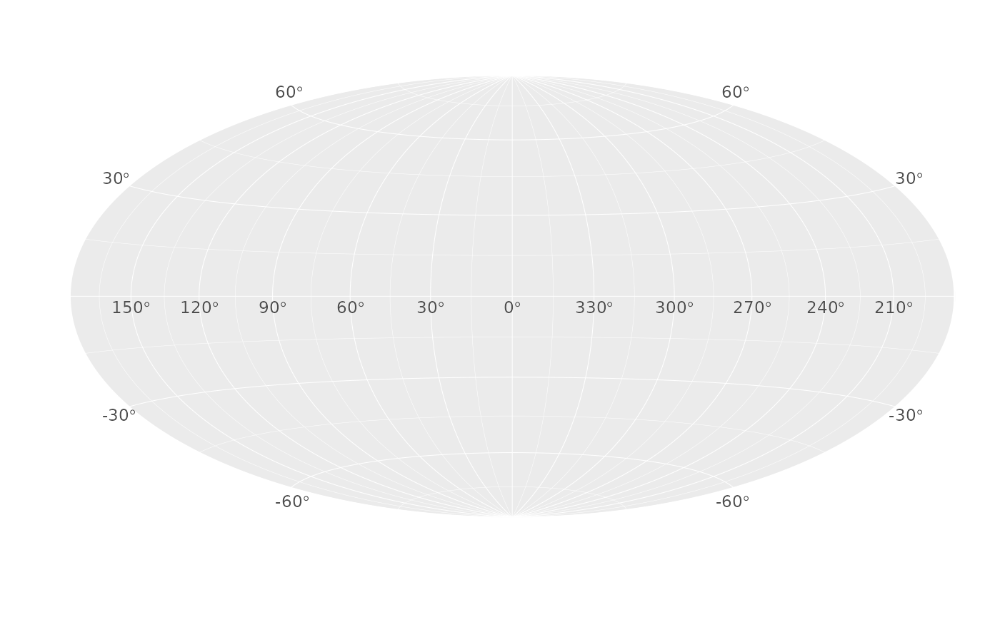
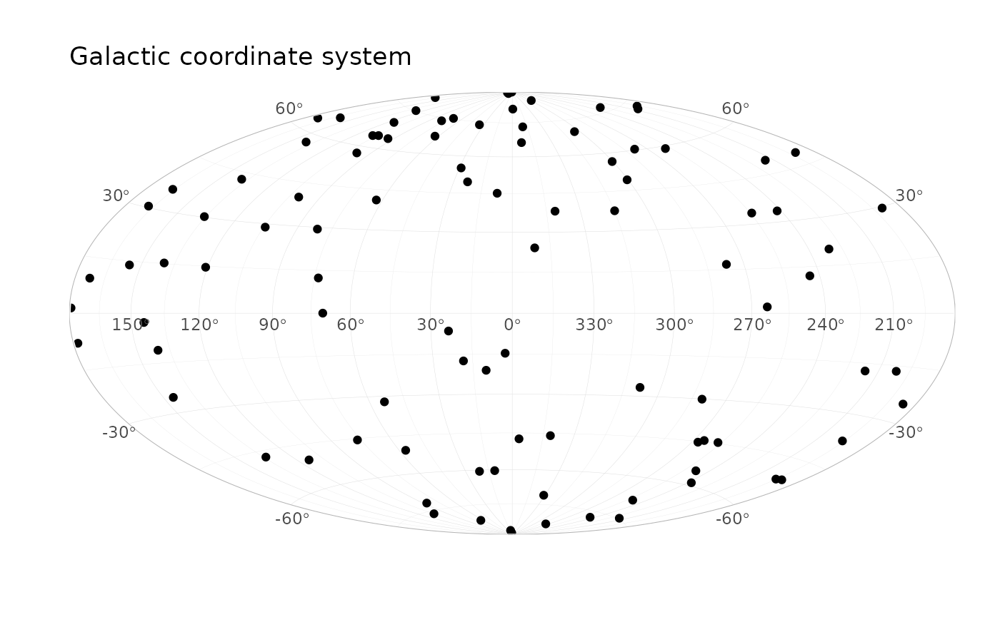
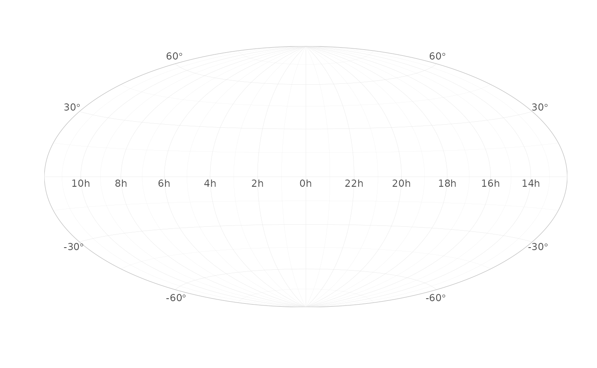
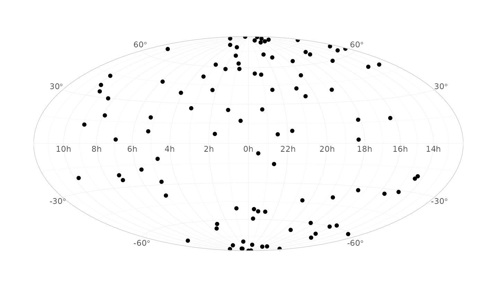
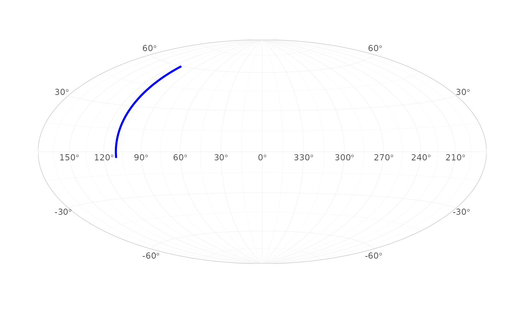
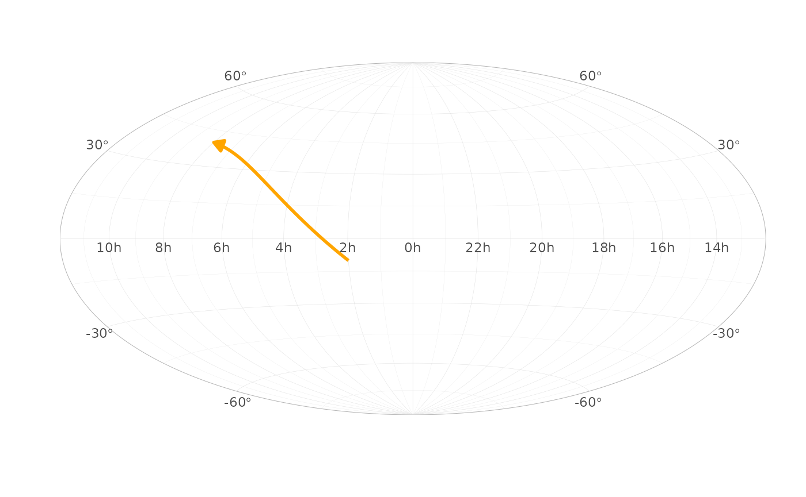
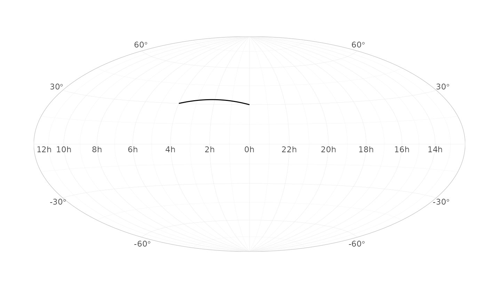
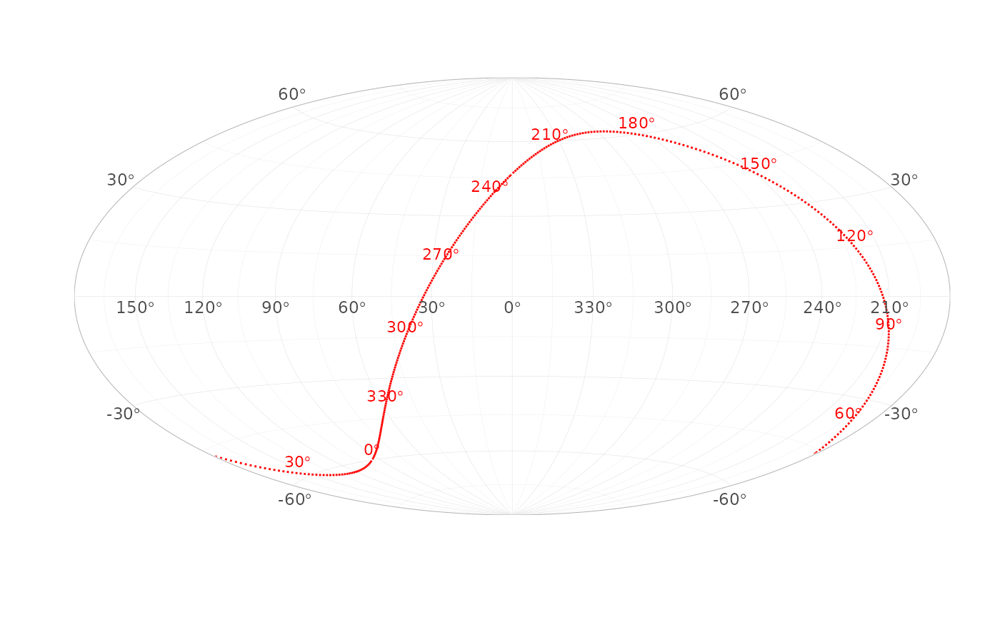

TL;DR: ggsky adds galactic and equatorial sky-map coordinates to ggplot2, so you can plot points, paths, and segments on a Hammer projection with readable sky-grid labels.
Coordinate Systems
Galactic Coordinate System
ggplot() +
coord_galactic()
N <- 100
df_gal <- data.frame(
l = runif(N, 0, 360),
b = runif(N, -90, 90)
)
ggplot(df_gal, aes(l, b)) +
geom_point() +
coord_galactic()
Galactic longitude vs latitude.
Equatorial coordinate system
ggplot() +
coord_equatorial()
df1 <- data.frame(
ra = runif(N, 0, 360),
dec = runif(N, -90, 90)
)
ggplot(df1, aes(ra, dec)) +
geom_point() +
coord_equatorial()
Right ascension versus declination. Coordinates ra and
dec must be in degrees.
Custom geoms
geom_path
It projects geom_path between points along Great circle, i.e., the shortest path on the sky map.
df_path_gal <- data.frame(
l = c(110, 110),
b = c(-4, 60),
g = 1
)
ggplot(df_path_gal, aes(l, b, group = g)) +
geom_path(colour = "blue", linewidth = 1) +
coord_galactic()
geom_segment
df_seg_eq <- data.frame(
x = 30, y = -10,
xend = 120, yend = 40
)
ggplot(df_seg_eq) +
geom_segment(
aes(x = x, y = y, xend = xend, yend = yend),
linewidth = 1, colour = "orange",
arrow = arrow(type = "closed", length = unit(0.1, "inches"))
) +
coord_equatorial()
Custom scales
scale_gal_lat(), scale_gal_lon(),
scale_eq_ra(), scale_eq_dec()
df_path_eq <- data.frame(
ra = c(0, 60),
dec = c(30, 30),
g = 1
)
ggplot(df_path_eq, aes(ra, dec, group = g)) +
geom_path() +
coord_equatorial() +
scale_eq_ra(breaks = seq(0, 330, by = 30))
Plot celestial equator on galactic plane
Use built-in dataset equator.
ggplot(equator, aes(l, b)) +
geom_path(linetype = "dotted", color = "red") +
geom_text(
data = subset(equator, ra %% 30 == 0),
aes(label = sprintf("%d*degree", ra)),
parse = TRUE,
vjust = -0.5,
size = 3,
color = "red"
) +
coord_galactic()